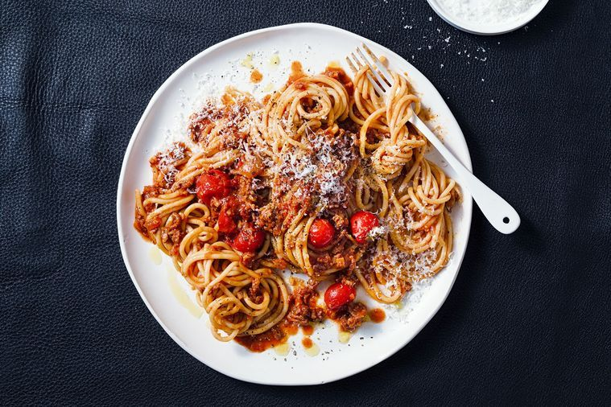

Spaghetti Recipe

Ingredients
- Pasta of choice
- Beef or pork mince
- Diced tomato
- Onion and garlic
- Red wine
- Salt and pepper
- Carrots
Steps
- Dice and saute onion, garlic and carrots
- Add meat and brown
- Add diced tomato and red wine
- Bring to a boil and simmer
- Boil pasta
- Serve together